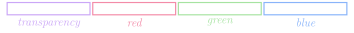

Image Reading
Jed Rembold
October 23, 2024
Announcements
- Problem Set 5 due on Monday!
- Just 2 problems, of which you already have everything you need
- Remember that we have another project coming next week, so having PS5 done in a timely manner sets you up well for a good start on that project
- Attend your small sections today or tomorrow! All questions built around understanding and using lists.
- Midterm 2 is two weeks from Friday
- Polling: polling.jedrembold.prof
Review!
Suppose I construct the below 2D array using list comprehension:
A = [[i+j for i in range(3)] for j in range(4)]
What would be the output of:
print([A[i][2] for i in range(len(A))])
[0,1,2][2,3,4][2,3,4,5][2,2,2,2]
Images and Pixels
2D Arrays → Images
Image data is commonly stored in two-dimensional arrays
Each element stores information about the pixel that exists at that location
The
GImageclass lets you convert between the image itself and the array representing the image contents by using theget_pixel_arraymethod, which returns a two-dimensional array of integers.We could get the pixels from our example image using:
image = GImage("VLA_Moonset.jpg") pixels = image.get_pixel_array()The first index of the pixel array gets you the row, the second index gets you the column
Pixel Contents
- Each element in a pixel array is an integer in which the 32 bits are interpreted as:

- The first byte (8 bits) is the transparency or alpha
- The next three bytes indicate the amount of red, green, and blue in
the pixel, where each value varies from 0 to 255
- Form the RGB of a color, generally expressed in hexadecimal form
10010101→0x9500111001→0x3901100011→0x63
- Overall color:
#953963or
- Form the RGB of a color, generally expressed in hexadecimal form
Combining Light Colors

Transparency
- The first byte (8 bits) of the pixel value gives the transparency, which indicates how much of the background is allowed to show through
- Often denoted with the Greek letter alpha: \(\alpha\)
- Varies from 0 to 255 like the other 8 bit values:
- 0 is entirely transparent
- 255 is entirely opaque
Breaking out the Colors
- You do not need to convert the pixel values yourself! PGL has built-in ways to extract the various colors
| Function | Description |
|---|---|
GImage.get_red(|||pixel|||) |
Returns the integer (0-255) corresponding to the red portion of the pixel |
GImage.get_green(|||pixel|||) |
Returns the integer (0-255) corresponding to the green portion of the pixel |
GImage.get_blue(|||pixel|||) |
Returns the integer (0-255) corresponding to the blue portion of the pixel |
GImage.get_alpha(|||pixel|||) |
Returns the integer (0-255) corresponding to the alpha portion of the pixel |
GImage.create_rgb_pixel(|||r|||,|||g|||,|||b|||) |
Returns a 32-bit integer corresponding to the desired color |
Image Thresholding
- As an example of reading and manipulating pixel values, lets look at how we could threshold the image to the right
- Thresholding is when you take a grayscale image and convert it to a black and white image, where a pixel is set to be white if it is above a certain threshold in brightness
- Grayscale, so each RGB component is the same
- Lets threshold at a value of 30

Thresholding Code
from pgl import GWindow, GImage
def threshold(e):
thresh_value = 30
height = len(pixels)
width = len(pixels[0])
new_array = [[0 for i in range(width)] for i in range(height)]
for r in range(height):
for c in range(width):
if GImage.get_red(pixels[r][c]) > thresh_value:
new_array[r][c] = GImage.create_rgb_pixel(0, 255, 0)
else:
new_array[r][c] = GImage.create_rgb_pixel(0, 0, 0)
new_image = GImage(new_array)
gw.add(new_image)
gw = GWindow(800, 525)
image = GImage("Moon.png")
gw.add(image)
pixels = image.get_pixel_array()
gw.add_event_listener("click", threshold)Reading Other Files
Reading
- Programs often need to work with collections of data that are too
large to reasonably exist typed all out in the code
- Easier to read in the values of a list from some external data file
- A file is the generic name for any named collection of data maintained on some permanent storage media attached to a computer
- Files can contain information encoded in many different ways
- Most common is the text file
- Contains character data like you’d find in a string
Strings vs Text Files
- While strings and text files both store characters, there are some
important differences:
- The longevity of the data stored
- The value of a string variable lasts only as long as the string exists, is not overridden, or is not thrown out when a function completes
- Information in a text file exists until the file is deleted
- How data is read in
- You have access to all the characters in a string variable pretty much immediately
- Data from text files is generally read in sequentially, starting from the beginning and proceeding until the end of the file is reached
- The longevity of the data stored
Reading Text Files
The general approach for reading a text file is to first open the file and associate that file with a variable, commonly called its file handle
We will also use the with keyword to ensure that Python cleans up after itself (closes the file) when we are done with it (Many of us could use a
withirl)with open(|||filename|||) as |||file_handle|||: |||Code to read the file using the file_handle|||Python gives you several ways to actually read in the data
readreads the entire file in as a stringreadlineorreadlinesreads a single line or lines from the file- Can use the file handle as an iterator to loop over
Entire file ⟶ String
The
readmethod reads the entire file into a string, with includes newline characters (\n) to mark the end of linesSimple, but can be cumbersome to work with the newline characters, and, for large files, it can take a large amount of memory
As an example, the file:
One fish
two fish
red fish
blue fishwould get read as
"One fish\ntwo fish\nred fish\nblue fish"
Line by Line
Of the ways to read the file in a string at a time, using the file handler as an iterator and looping is probably best and certainly most flexible
Leads to code that looks like:
with open(|||filename|||) as |||f|||: for line in |||f|||: |||Do something with the line|||Note that most strategies preserve the newline character, which you very likely do not want, so be ready to strip them out before doing more processing
Where Strings and Lists Meet
- There are a handful of methods that transition between strings and lists
| Method | Description |
|---|---|
|||string|||.split() |
Splits a string into a list of its components using whitespace as a separator |
|||string|||.split(|||sep|||) |
Splits a string into a list using the specified separator
sep |
|||string|||.splitlines() |
Splits a string into of list of strings at the newline character |
|||string|||.join(|||a_list|||) |
Joins the elements of the a_list into a
string, using string as the separator |
Powers Combined
So long as your files are not gigantic, using
readand then thesplitlinesmethod can be a good optionThis does remove the newline characters, since it splits the string at them
with open(|||filename|||) as |||f|||: lines = |||f|||.read().splitlines() |||Then you can do whatever you want with the list of lines|||
Example: Name Mangling
- Let’s look at an example with some more meat to it
- I have a text file with all your first names. I’d like to:
- Read in the names
- Select two at random
- Combine the first half of one name with the second half of the other
- Print out both potential hybrid names
- We’ll practice breaking a problem into steps along the way here
Example Code:
import random
def name_mangler(filename):
"""
Reads from a roster of first names and then randomly chooses two to cut in half
and recombine with the other. Then prints off both combinations.
Inputs:
filename (string): The filename containing the names
Outputs:
None
"""
def get_names(filename):
"""Reads in the roster. """
with open(filename) as fh:
names = fh.read().splitlines()
return names
def choose_two(name_list):
""" Chooses two different names from the list. """
name1 = random.choice(name_list)
name2 = random.choice(name_list)
while name1 == name2:
name2 = random.choice(name_list)
return [name1, name2]
def slice_and_combine(name1, name2):
""" Slices and recombines both names, printing to the screen. """
name1_mid = len(name1)//2
name2_mid = len(name2)//2
print(name1[:name1_mid] + name2[name2_mid:])
print(name2[:name2_mid] + name1[name1_mid:])
names = get_names(filename)
chosen = choose_two(names)
slice_and_combine(chosen[0], chosen[1])
if __name__ == '__main__':
name_mangler('class_first_names.csv')